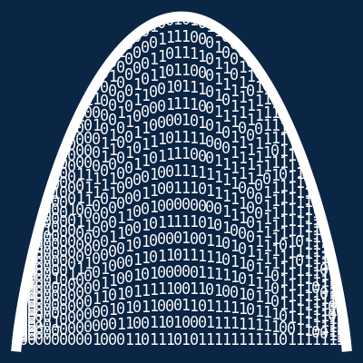
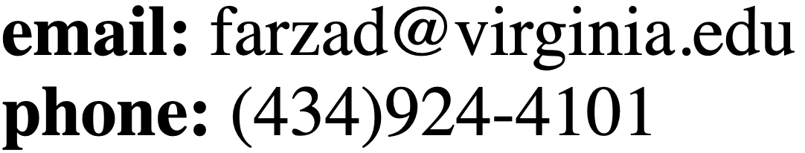

|
 |
|
Information Processing and Storage Lab
|
Electrical & Computer Engineering and Computer Science
University of Virginia
351 McCormick Road
P.O. Box 400743
Charlottesville, VA 22904

|
|
Our research spans topics in information and coding theory, bioinformatics/computational biology, and machine learning. We are
particularly interested in problems that lie in the intersections of these areas, such as data storage in DNA, compression of biological data, and probabilistic and information-theoretic modeling of DNA mutations.
Members:
Principal Investigator:
Current Members:
- Yuting Li, Graduate Research Assistant
- Kallie Whritenour, Graduate Research Assistant
- Sarvin Motamen, Graduate Research Assistant
- Haoxuan Luo, Gradatue Research Assistant
Alumni:
- Hao Lu, Ph.D., 2023
- Yuanyuan Tang, Ph.D., 2023, Broadcom
- Tao Jin, Ph.D., 2025, Amazon
- Zhuoer Shen, M.S., 2025, Ph.D. Student at UCSB